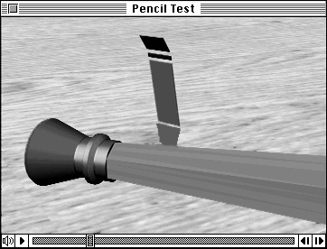

Playing Movies With a Movie Controller
Movie controller components provide a simple method for displaying movies along with associated play controls. Using a movie controller component is the easiest way to incorporate a good movie player interface without having to write a substantial amount of code. A typical movie controller component allows the user to play a movie, make the movie pause, move forward and backward, and resize the movie's display. Some movie controllers may allow the user to edit the movie as well. Figure 2-31 shows Apple's movie controller.Figure 2-31 A movie controller playing a movie

Listing 2-3 shows how to play a movie using a movie controller component. This program uses the
GetMoviefunction that is defined in Listing 2-2 on page 2-27. Refer to Inside Macintosh: QuickTime Components for a complete description of movie controller components and how to use them.Listing 2-3 Playing a movie using a movie controller component
#include <Types.h> #include <Memory.h> #include <Traps.h> #include <Menus.h> #include <Fonts.h> #include <Packages.h> #include <GestaltEqu.h> #include <StandardFile.h> #include <QDOffscreen.h> #include "Movies.h" #include "ImageCompression.h" #include "QuickTimeComponents.h" void main (void) { Movie Controller aController; WindowPtr aWindow; Rect aRect; Movie aMovie; Boolean done = false; OSErr err; EventRecord theEvent; WindowPtr whichWindow; short part; InitGraf (&qd.thePort); InitFonts (); InitWindows (); InitMenus (); TEInit (); InitDialogs (nil); err = EnterMovies (); i SetRect (&aRect, 100, 100, 200, 200); aWindow = NewCWindow (nil, &aRect, "\pMovie", false, noGrowDocProc, (WindowPtr)-1, true, 0); SetPort (aWindow); aMovie = GetMovie (); if (aMovie == nil) return; SetRect(&aRect, 0, 0, 100, 100); aController = NewMovieController (aMovie, &aRect, mcTopLeftMovie); if (aController == nil) return; err = MCGetControllerBoundsRect(aController, &aRect); SizeWindow (aWindow, aRect.right, aRect.bottom, true); ShowWindow (aWindow); err = MCDoAction (aController, mcActionSetKeysEnabled, (Ptr) true); while (!done) { WaitNextEvent(everyEvent, &theEvent, 0, nil ); if (!MCIsPlayerEvent(aController, &theEvent)) { switch (theEvent.what) { case updateEvt: whichWindow = (WindowPtr)theEvent.message; BeginUpdate (whichWindow); EraseRect (&whichWindow->portRect); EndUpdate (whichWindow); break; case mouseDown: part = FindWindow (theEvent.where, &whichWindow); if (whichWindow == aWindow) { switch (part) { case inGoAway: done = TrackGoAway (whichWindow, theEvent.where); break; case inDrag: DragWindow (whichWindow, theEvent.where, &qd.screenBits.bounds); break; } } } } } DisposeMovieController (aController); DisposeMovie (aMovie); DisposeWindow(aWindow); }